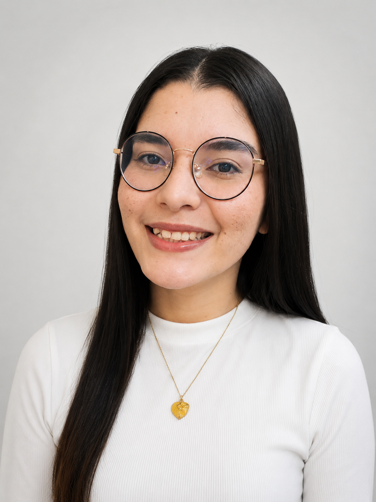

Sobre Mim
Olá! Meu nome é Karen Zerpa, Sou Venezuelana, mas moro em Campinas, Sp e esta é minha página inicial para o curso WDD 130.


Olá! Meu nome é Karen Zerpa, Sou Venezuelana, mas moro em Campinas, Sp e esta é minha página inicial para o curso WDD 130.